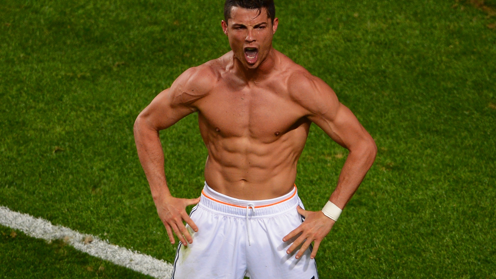

Arranca la temporada 2021/22 de la UEFA Champions League
Champions League
La UEFA Champions League, denominada Liga de Campeones de la UEFA en
español, es el torneo oficial de fútbol más importante y famoso de todas las
competiciones organizadas por la UEFA o Unión de Asociaciones Europeas de Fútbol a
nivel de clubes, además de uno de los más reconocidos a nivel mundial. Anteriormente,
la Champions League era conocida como Copa de Europa. La final de este torneo es
el evento deportivo más esperado del año, el cual es visto por más de trescientos
millones de personas aproximadamente.
Historia de la Champions League
En el año 1954, el conjunto inglés Wolverhampton viajó a diferentes lugares de
Europa para jugar contra muchos de los más grandes y prestigiosos clubes de dicho
continente. Los resultados que obtuvo fueron muy buenos, por lo que la prensa inglesa
publicó que ese equipo era el mejor de Europa, algo que no fue del agrado de Gabriel
Hanot, un periodista francés que declaró que la Associazione Calcio Milan, el Real
Madrid y el Saint Etienne eran mejores clubes que el inglés, por lo que a través de una
columna en el diario L’Équipe, Hanot y Jacques Ferran lanzaron una iniciativa: celebrar
un campeonato para los clubes europeos.
| Nombre |
Edad |
Equipo |
Cantidad de goles |
| LIONEL MESSI |
35 años |
PSG |
129 |
| CRISTIANO RONALDO |
37 años |
Manchester United |
140 |
| KYLIAN MBAPPÉ |
22 años |
PSG |
25 |
| ERLING HAALAND |
22 años |
Borussia Dortmund |
24 |
| NEYMAR |
30 años |
PSG |
6 |
| ROBERT LEWANDOWSKI |
34 años |
Bayern Munich |
80 |
| KARIM BENZEMA |
34 años |
Real Madrid |
86 |
| KEVIN DE BRUYNE |
31 años |
Manchester City |
17 |
| N'GOLO KANTÉ |
31 años |
Chelsea |
28 |
| MEMPHIS DEPAY |
28 años |
Barcelona |
36 |